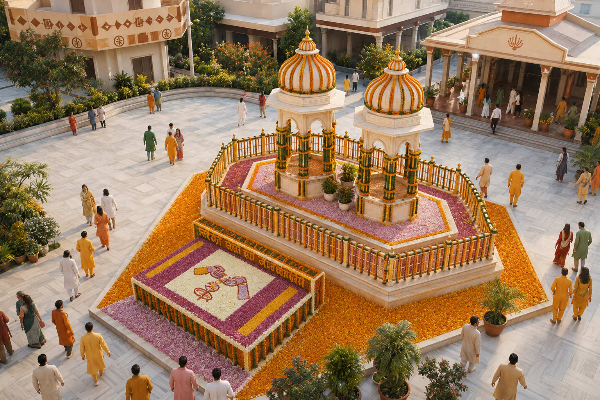
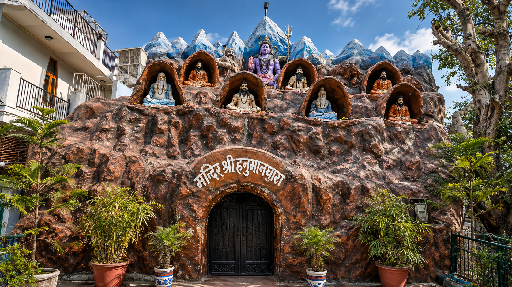
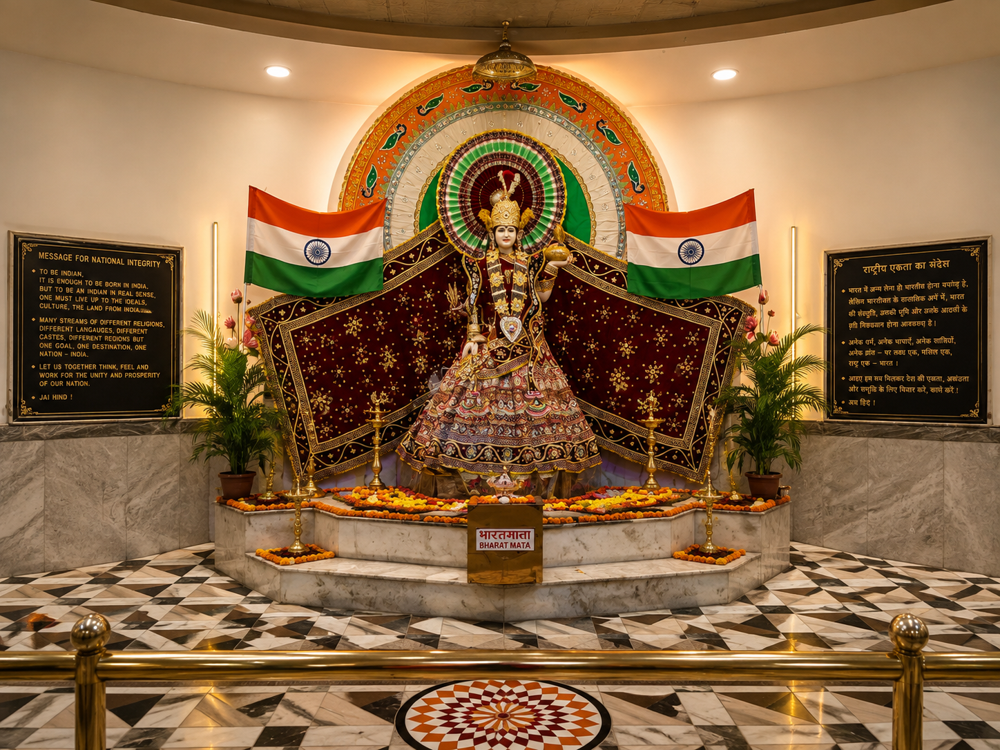
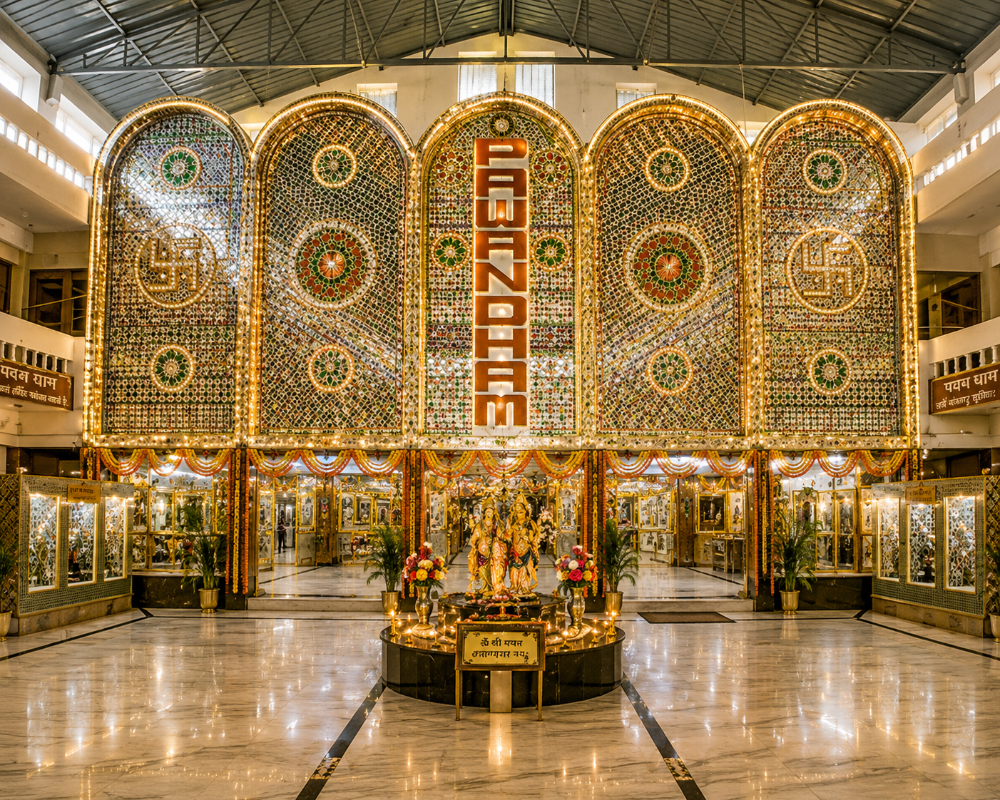
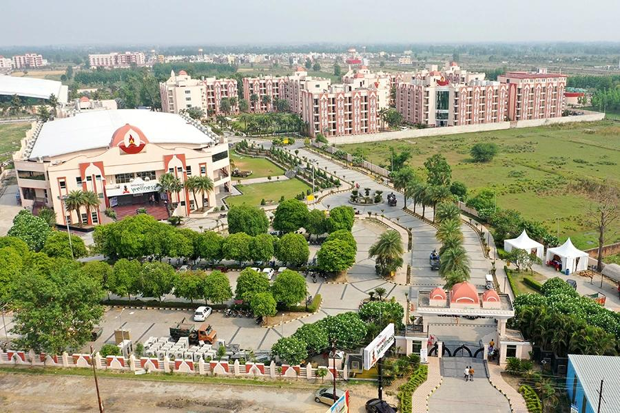
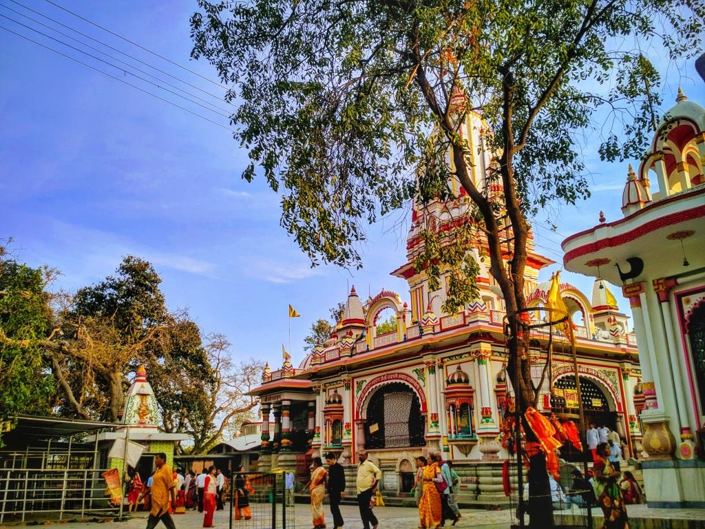

A FEW MINUTES' WALK
Shantikunj
A peaceful spiritual destination located close to The Urmi.

Stay at The Urmi and explore the spiritual, cultural and natural experiences around Haridwar, with convenient access to nearby attractions and excursions.
Explore ExcursionsThe Urmi is near Shantikunj on Rishikesh Road, placing several well-known spiritual and cultural attractions within easy reach.

A peaceful spiritual destination located close to The Urmi.

A nearby spiritual and cultural attraction for guests exploring Haridwar.

A distinctive Haridwar attraction conveniently accessible from the hotel.

A well-known attraction that can be included in a local Haridwar outing.
Experience one of Haridwar's most iconic spiritual landmarks, around 10 minutes by car depending on traffic.

Extend your journey beyond Haridwar with an excursion towards Rishikesh.

A World famous Ashram of Baba Ram Dev , Patanjali Yogpeeth at Bhadarabad.

A sacred Shiva temple in Kankhal, close to Haridwar's spiritual heart.
Haridwar and its surroundings offer different kinds of experiences, from spiritual visits to broader Uttarakhand journeys.
Explore temples, ashrams and the spiritual atmosphere that defines Haridwar.
Discover the riverfront and experience the atmosphere of Haridwar's evening Ganga Aarti.
Use Haridwar as a convenient base for wider travel and Chardham journeys.
Whether you are planning a short local outing or a longer journey, our team can assist guests with travel arrangements and local sightseeing requirements.
Haridwar is an important starting point for pilgrims travelling towards Uttarakhand's sacred Himalayan destinations. The Urmi can assist guests with travel planning, transfers and onward journey requirements.

Stay comfortably, explore the city and let us help you plan your local excursions and onward journeys.
Contact The Urmi